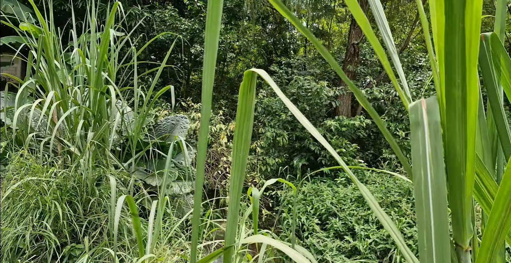
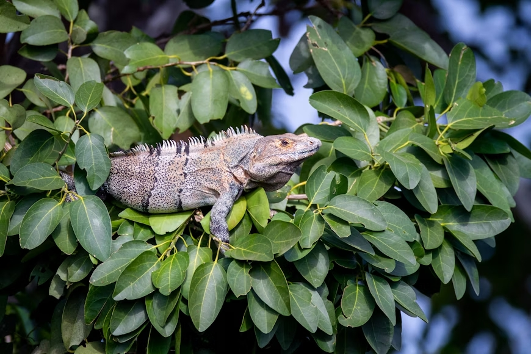
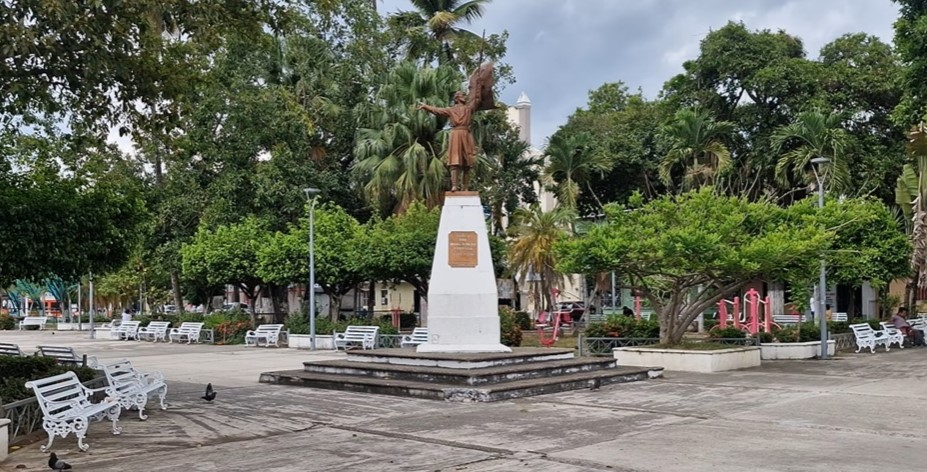

Explora Tuxtepec
Historia
Conoce el pasado y las raíces de nuestro municipio desde la época prehispánica hasta hoy.
Ver más

Flora
Conoce la diversidad vegetal de Tuxtepec: árboles frutales, plantas tropicales y especies nativas que embellecen nuestra región.
Ver más

Fauna
Descubre los animales que habitan en nuestra zona: aves exóticas, mamíferos y reptiles que forman parte del ecosistema tuxtepecano.
Ver más

Galeria
Disfruta una colección de imágenes que muestran la belleza natural, cultural y humana de San Juan Bautista Tuxtepec.
Ver másTradiciones
Las tradiciones más emblemáticas, como la Flor de Piña, las festividades patronales y las celebraciones locales únicas.
Ver más